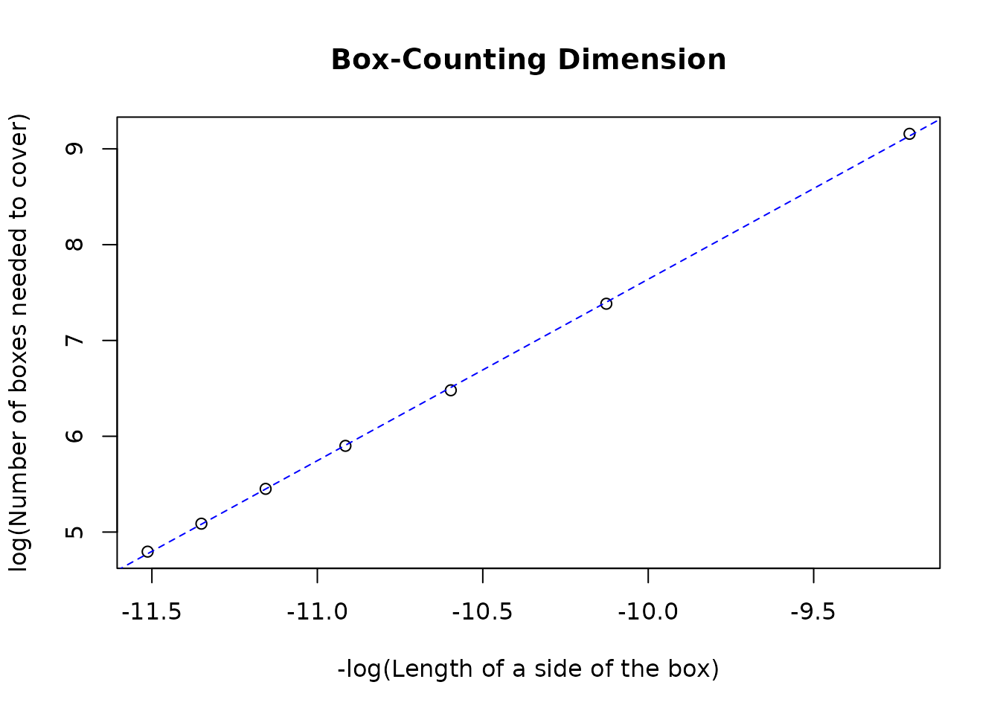

Overview
This vignette aims at providing an overview of how the calculation of the fractal dimension using the box-counting technique is carried out and then proceeds to give an example.
Calculating the Box-Counting Dimension
The sameSVD package is used for calculating the fractal
dimension of a simple feature of geometry type POLYGON
using the box-counting technique. It is done by performing the following
important steps:
- Importing a simple feature as an object of class
sf. - If the imported simple feature has spherical coordinates (\(\mathbb{S}^2\)), it is projected conformally using the Mercator projection (EPSG:3857) so that it is referenced using Cartesian coordinate reference system (\(\mathbb{R}^2\)).
- A grid of varying grid sizes in the same CRS as the simple feature is overlayed on the feature. The default sequence of cell cizes are
seq(10000, 100000, 10000)
#> [1] 1e+04 2e+04 3e+04 4e+04 5e+04 6e+04 7e+04 8e+04 9e+04 1e+05- The number of cells intersecting the feature is counted for grids of each cell size and recorded against the inverse of the cell size.
- The count of the number of boxes (log-transformed) is plotted against the reciprocal of the cell-size (log-transformed).
- A linear regression is performed to find the best-fit line for this log-log scatterplot.
- The slope of the best-fit line gives the box-counting dimension for the feature.
Example
sameSVD allows the import of a simple feature in two
ways.
- If the feature is stored in an external file, it may be imported
using the
dsnandlayerarguments in the functionbcd()along with any other arguments forsf::st_read(). Theplot = TRUEargument plots the scatterplot and the shows the best-fit line obtained from the simple linear regression. The default argument forplotisFALSE.
mp = import_SVD(dsn = system.file(package = "sameSVD"), layer = "madhya_pradesh")
#> Reading layer `madhya_pradesh' from data source
#> `/home/runner/work/_temp/Library/sameSVD' using driver `ESRI Shapefile'
#> Simple feature collection with 1 feature and 2 fields
#> Geometry type: POLYGON
#> Dimension: XY
#> Bounding box: xmin: 74.03467 ymin: 21.07531 xmax: 82.80778 ymax: 26.87437
#> Geodetic CRS: WGS 84
#>
#> Note: Coordinates in Lat/Long; reprojecting to EPSG:3857...
bcd(k = mp, l = seq(50000, 100000, 10000), plot = TRUE)
#> Generating grids...
#> Counting intersecting cells...
#> Performing simple linear regression to determine Box-Counting dimension...
#> Plotting requested...#> Plotting best-fit line...
#> [1] 1.776026- Alternatively, if the simple feature is already available to the
user in the envrionment, it can be passed on to
bcd()as the the argumentx. The sequence of cell-sizes to be tested can be optionally modified by explicitly passing the argumentltobcd().
library('rnaturalearth')
deutschland = import_SVD(ne_countries(scale = "medium", country = "Germany", returnclass = "sf"))
#> Note: Coordinates in Lat/Long; reprojecting to EPSG:3857...
bcd(deutschland, l = seq(10000, 100000, 15000), plot = TRUE)
#> Generating grids...
#> Counting intersecting cells...
#> Performing simple linear regression to determine Box-Counting dimension...
#> Plotting requested...
#> Plotting best-fit line...
#> [1] 1.893884Internal working
When the above code is executed, deutschland stores a
sf polygon representing Germany. When bcd() is
called it creates sf objects in the form of grids
(comprising of polygons) covering deutschland.
Additionally, since the CRS of deutschland is in latitude
and longitude, it transforms it to EPSG:3857.
library(sf)
#> Linking to GEOS 3.10.2, GDAL 3.4.1, PROJ 8.2.1; sf_use_s2() is TRUE
deutschland = st_transform(deutschland, 3857)The number of grids created is the length of the vector
l that is passed to bcd(). Each grid is made
up of square polygons with side-lengths l. The following
figures show square grids overlayed on top of deutschland
with side-lengths 40000m and 70000m, as an illustraion.
par(mfrow=c(1,2))
plot(st_geometry(deutschland), col = "wheat", axes = TRUE, main = "Cell size = 40000m", xlab = "Easting (m)", ylab = "Northing (m)")
plot(st_make_grid(deutschland, cellsize = 40000), add = TRUE)
plot(st_geometry(deutschland), col = "wheat", axes = TRUE, main = "Cell size = 70000m", xlab = "Easting (m)", ylab = "Northing (m)")
plot(st_make_grid(deutschland, cellsize = 70000), add = TRUE)
The number of cells intersecting with deutschland, say
\(N\), is counted for each grid with
cells having side-length \(l\). A
simple linear regression is performed with \(log(N)\) being the dependent variable and
\(-log(\frac{1}{l})\). The coefficient
of the dependent variable i.e., the slope of the best-fit line gives the
Box-Counting Dimension.
In the above example, the number of intersecting cells for cell sizes 40000m and 70000m are
# For cell size = 40000m
(n1 = length(st_intersection(st_geometry(deutschland), st_make_grid(deutschland, cellsize = 40000))))
#> [1] 652
# For cell size = 70000m
(n2 = length(st_intersection(st_geometry(deutschland), st_make_grid(deutschland, cellsize = 70000))))
#> [1] 233respectively. Thus, the dependent variable \(N\) would be
while the independent variable \(-log(\frac{1}{l})\) would be
The slope of the best-fit line in this case will be the slope of the line joining the points and is equal to
-(y[2] - y[1])/(x[2] - x[1])
#> [1] 1.838772This is very close to the slope calculated using bcd()
earlier in this document.